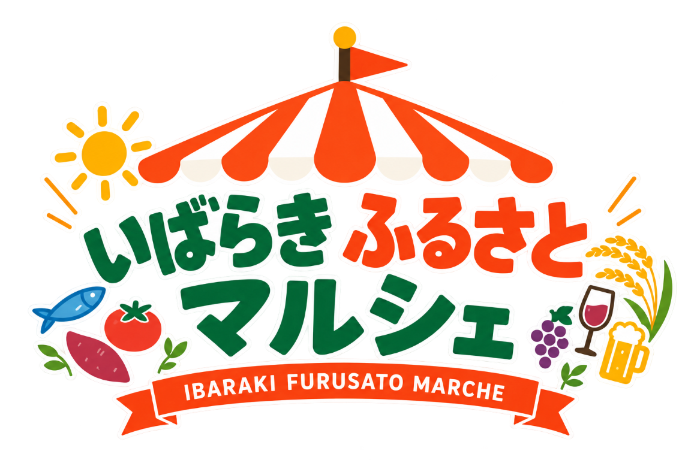

試食・試飲
各ブースで特産品を実際に味わえます。お気に入りを見つけてください。

茨城の「いいもの」を、
見て・味わって・応援する。
茨城の自治体が、おおたかの森S.C.に集まる一日。
お米、干しいも、メロン、栗、常陸牛……。
茨城の自治体がおおたかの森に集まって、自慢の特産品を持ってきます。試食や輪投げチャレンジもあるので、お子さまと一緒にぜひ遊びにきてください。
家族そろって、おでかけしよう！
このマルシェは、茨城のまちと首都圏のみなさんが出会うところ。知って、味わって、気に入ったらふるさと納税で応援。イベントのあともつづく、まちとのつながりをつくります。
お子さまと一緒に、ブースをめぐりながら楽しめます。カードをタップすると、当日のヒントが出ます。
← 横にスワイプ →
茨城県内の自治体が、自慢の特産品を持って集まります。カードをチェックして、6つのまちをスタンプラリー。産品の名前をタップすると、当日の試食が待ち遠しくなります。
写真提供：観光いばらきフォトライブラリー、取手市観光協会、牛久市／返礼品画像：ふるさとチョイス
ふるさと納税は、「応援したい自治体」を選んで寄附できるしくみです。生まれたまちでなくても、旅で好きになったまちでも、このマルシェで出会ったまちでも。寄附は地域のものづくりや子育て・教育・環境の保全などに使われ、お礼として地域の特産品が届きます。
気に入った特産品にはふるさと納税のQRコードラベル。スマホでその場で、あとからでも申し込めます。
後日、自治体から地域の特産品（お礼の品）がご自宅に届きます。
寄附金は地域のものづくりや子育て・環境の保全などに。確定申告かワンストップ特例で、税の控除も受けられます。
不要です。入場無料で、お好きな時間にお越しください。
もちろんです。輪投げチャレンジや試食はお子さまも楽しめます。ベビーカーでもご来場いただけます。
販売は各自治体ブースで行います。現金のほか、ブースによってはキャッシュレス決済も利用できます。
おおたかの森S.C.の駐車場をご利用いただけます（S.C.の規定に準じます）。
予約不要・入場無料。
お買い物のついでに、ふらっと寄れます。ご家族みなさんでお越しください。